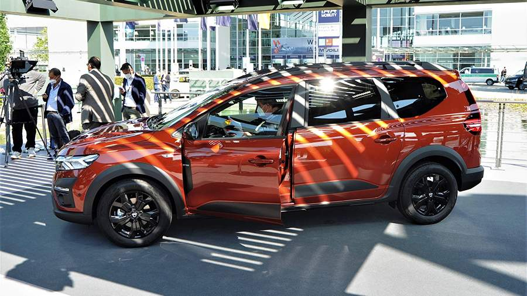

Франкфуртский автосалон в Германии считается одним из главных автомобильных событий. Именно здесь традиционно представляют свои новинки Daimler, VW, BMW, Audi, Porsche. Однако пандемия внесла свои коррективы в программу, и в этом году во время, традиционно отведенное Франкфурту, заняла новая выставка IAA Mobilityв Мюнхене. Сменилась и концепция — теперь это не только автомобили, но абстрактная мобильность. Что интересного показали на новом месте — в материале «Известий».
Велосипеды наступают
После неоднозначного салона во Франкфурте в 2019 году было решено не фокусироваться только на автомобилях. Просто демонстрации «листового металла» недостаточно, говорят эксперты.
«What will move us next?» — слоган события можно перевести на русский язык двояко: это то, что будет двигать нашими чувствами и будет двигать нас в прямом смысле. Электрические скутеры и велосипеды, средства индивидуальной мобильности, трамваи, автобусы, беспилотники.
Автомобиль — лишь часть ответа на этот вопрос, и вовсе не главная. Поэтому на мюнхенскую выставку приехали 70 велосипедных брендов, а из автомобильных отказались от участия многие крупные игроки, включая Toyota и Stellantis, объединяющий целое созвездие брендов — Peugeot, Citroen, FIAT, Jeep, Maserati, Alfa Romeo, Opel.
Электрический «Гелик» и «Майбах» у розетки
Когда несколько лет назад автомобильные бренды один за другим объявляли о планах полностью отказаться от двигателей внутреннего сгорания, в это верилось с трудом. Сейчас большинство мюнхенских новинок — электромобили. Стандарт «Евро-7», который в скором времени будет принят, уже ставит под вопрос большинство платформ с двигателями внутреннего сгорания.
Mercedes-Benz стремится доказать, что для его клиентов, по сути, ничего не меняется. В его видении будущего есть место даже для любимого многими «Гелендвагена».Концепт EQG демонстрирует, как будет выглядеть электрический G-Class. Он сохранил раму и квадратный кузов, но решетка радиатора нарисованная, а сзади вместо запаски — квадратный кофр для зарядных кабелей. Электрификация, если послушать немцев, сулит новые преимущества: четыре мотора, по одному на каждое колесо, позволят внедорожнику брать 100-процентные подъемы.
Роскошный электромобиль — почему бы нет? Покупатели «Майбахов» тоже молодеют и интересуются новыми технологиями. Концепт Mercedes-Maybach EQS выглядит достаточно консервативно. Прутья решетки радиатора металлические, хотя и упрятаны за стекло. Снаружи вообще больше хрома, чем светодиодов. Кузов — классический универсал, пусть и со скругленными углами ради лучшей аэродинамики. В салоне — знакомый Hyperscreen, объединяющий три дисплея в один. При этом графика у «Майбаха» исполнена в более сдержанном и консервативном стиле.
По новым правилам
Audi кардинально меняет не только стилистику своих машин, но и сами правила бизнес-класса. Концепт Grandsphere дает первое представление о новом флагманском седане, который заменит A8. Автомобиль немного крупнее существующей A8 L и при этом еще ниже. Двухсекционные стекла дверей зрительно еще уменьшают высоту автомобиля.
Электромобиль оснащен автопилотом четвертого уровня, что позволяет ездить без водителя. Поэтому передние пассажиры здесь самые главные, их кресла оснащены множеством регулировок и позволяют расположиться полулежа. Электроника отслеживает не только команды жестами, но и взглядом, а вместо дисплеев — проекция на деревянную переднюю панель и лобовое стекло. Заявленный пробег на одной зарядке — 750 км, причем от 270-киловаттного терминала машину можно зарядить до 80% всего за 25 минут. Благодаря двум электромоторам, вместе развивающим 720 л. с. и 960 Нм, автомобиль разгоняется до 100 км/ч менее чем за четыре секунды.
Электрические технологии — это еще и новая этика. BMW представила необычный концепт, который не только не вырабатывает CO2, но и призван внести вклад в борьбу с мусором. BMW i Vision Circular собран на 30% из переработанных отходов, включая алюминиевые панели кузова и пластик в салоне. Производитель отмечает, что скоро эта доля может быть увеличена до 50%.
При этом сама машина также может быть переработана вместе с тяговой батареей. Некоторые элементы кузова и вовсе взяты со старых автомобилей BMW: например, плафоны освещения в задней части салона — это шайбы системы iDrive, которые, по задумке, будут взяты с отслуживших свое кроссоверов BMW iX .
Электричество и гонки
Гоночный электромобиль Porsche Mission R, кроме того, что намекает на будущий монокубок, дает ответ на вопрос, куда девать отходы льняного производства. Двери, пороги, крылья выполнены из пластика, армированного волокнами льна. «Экзоскелет» крыши сделан из более привычного материала — углепластика.
Электромоторы, как и батарея, получили масляное охлаждение. Максимальная отдача в 1088 л. с. позволяет набирает первую «сотню» быстрее чем за 2,5 с. В Porsche обещают, что на гоночной трассе Mission R способен повторить результать Porsche 911 GT3 Cup 992.
Хетчбэк Cupra UrbanRebel с антикрылом способен разгонятся до «сотни» всего за 3,2 с. Но он только с виду похож на гоночный автомобиль. На самом деле это прообраз городского электрохетчбэка, который планируют выпускать в Испании под разными марками концерна VW.
Со своим кинозалом
Volkswagen в свою очередь представил автомобиль-медиагаджет. Концепт ID. Life в ретростиле демонстрирует первый взгляд на кроссовер, который появится через несколько лет. Пока же можно пофантазировать и оснастить машину кинотеатром. Проекционный экран вытягивается из передней панели и крепится к верхней кромке лобового стекла, при этом спинка цельного переднего дивана откидывается вперед и кино можно смотреть с заднего сиденья.
Еще одна занимательная деталь ID. Life — передача параметров хода машины на смартфон. Дисплея на передней панели нет, но есть сенсорные кнопки на отделанном под дерево кокпите. В остальном автомобиль сохраняет традиции семейства концептов ID: логотип и диодные плоские фонари, полностью вписанные в кузов штурвал и плоские ручки дверей. По заявлению производителя, электродвигатель будет мощностью 234 л. с., а батареи хватит на 400 км.
Знакомые имена, новые смыслы
Китайский автопроизводитель Great Wall хочет заинтересовать Европу гибридными кроссоверами Wey и электромобилями Ora. Китайские корни есть и у нового концептa Smart Concept #1.

Он создан совместными стараниями Daimler и Geely. Немцы по-прежнему отвечают за дизайн, но начинка китайская, и собирать ее будут в Китае. Машина не похожа на предыдущие «смарты», теперь это электрокроссовер длиной 4290 мм.
Даже привычные имена меняют наполнение. Новый Renault Megane превратился в электрокроссовер и уменьшился в размерах. Габариты новинки: 4210×1770×1500 мм. Электромобиль построен на той же модульной платформе CMF-EV, что и Nissan Ariya. При этом Megane E-Tech будет исключительно переднеприводным.
Кроссовер предложат в двух вариантах: со 130-сильным мотором и запасом хода 300 км и 218-сильным, с запасом хода 470 км.
Будущая Lada?
Dacia, бюджетный бренд Renault — один из немногих, кто показал в Мюнхене автомобиль с ДВС. Универсал Jogger — по сути, новый Logan MCV, позже превратившийся в Lada Largus. Но пятая дверь одностворчатая и поднимается вверх.
Jogger крупнее «Ларгуса» (4547×1784×1632 мм), но по величине колесной базы уступает: 2897 против 2905 мм. Автомобиль представлен в версии Extreme с дорожным просветом 200 мм. Уже в базе присутствуют багажные рейлинги с грузоподьемностью 80 кг со встроенными поперечинами, которые можно разложить без использования специального инструмента.
В Европе Jogger предлагается только с 3-цилиндровым турбомотором объемом 1 л, но позже представят «мягкий» гибрид. Появится ли такой автомобиль у нас и когда, вопрос открытый. Largus пока снимать с производства не планируют.
Будущее прошлого
Даже BMW представила в Мюнхене собственные электровелосипед i Vision AMBY и электромотоцикл Motorrad Vision AMBY. Они умеют самостоятельно ограничивать скорость, ориентируясь на данные GPS. Например, на велодорожке они не разгоняются быстрее 25 км/ч. Чтобы поехать быстрее, потребуется наличие номеров, страховка и шлем.
Впрочем, многие автопроизводители, включая и BMW, начинали с велосипедов.
Электромобиль Microlino 2.0 также говорит о том, что история повторяется. Фактически это возрожденнный «бабл-кар» BMW Isetta — сохранилась даже распашная дверь спереди, как у холодильника, а также более узкая колея задних колес. Предлагаются три варианта аккумуляторной батареи, самой емкой хватит на 230 км. Электромотор с пиковой отдачей всего 26 л. с. позволяет разгоняться до 50 км/ч за пять секунд. Максимальная скорость ограничена на отметке 90 км/ч.